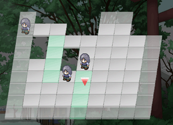

シルバーセカンド開発日誌
2008年12月
■
2008-12-29 (月) 窓の杜大賞 銀賞受賞▼多くの10周年記念コメントをお寄せくださって、
皆さま誠にありがとうございます。
いただいた言葉を糧に、これからも頑張り続けたいと思います！
それはそうと。
WOLF RPGエディターが「2008年度 窓の杜大賞」で銀賞を頂きました！
運が良くても編集部賞もらえる可能性が
最もベストだろうと思ってましたから目玉がぶっ飛びました。
ラッキー使いすぎたので反動で来年の運勢が不安です！！
これも多くのバグ報告やアドバイスを
送ってくださった皆さまのおかげです！
本当にありがとうございます！
【2008年度 窓の杜大賞】
http://www.forest.impress.co.jp/prize/2008/result.html [ｱｰｶｲﾌﾞ]
銀賞 「WOLF RPGエディター」
評価は…え？「楽しく簡単に作れる」……？
「とっつきやす…い」……！？ これ送ったの誰！？
こりゃツクールと比べた場合の評価ではないでしょうね。
HSPなどのスクリプト系ツールで
挫折した人が感想を送って下さった、という印象です。
そんな「市販ソフトに手を出せなかった人」が
触ってくださっているらしいので、
そういう意味では公開して良かったなと思います。
投票してくださった方々が
ここを見てくださっているかどうか分かりませんが、
みなさま本当にありがとうございました！
もっと綺麗な素材が欲しいとか、もっとお手軽に作りたいという方は、
ツクールシリーズをお買い求めになるのがオススメです。
私はツール開発が専業じゃないので、
初心者向けのドキュメント整理だとか
分かりやすいチュートリアルなんて書くヒマがないんですよ。
ツクールは本当に初心者向けなので、
「ＲＰＧ作るの面白そう、でもウディタむずいよ！」
とお思いでしたら、是非ツクールをどうぞ！
技術が向上したならば、最終的に作れるモノ的には
そんなに変わらないと思います。
むしろRPGツクールのほうがスクリプトでやれる幅が広いので、
ツクールの方がポテンシャル的には強い気がしますよ！
以下はその他の受賞ソフトについて。 ▼追記を開く▼ちなみに、窓の杜大賞に挙がっている他のツールも
かなり便利なのでオススメです！
といっても、どれもこれも用途がマニアックすぎますよ！？
PC初心者さんはHDDの状態を知りたいなんて思わないでしょうし、
「デフラグ？何それ」だし、
パーティション切り分けもたぶんしませんし、
テキストエディタもメールしか書かない人には必要ないし
大量の動画ファイルを保存するなんて
普通の人はしないはずなんですよ！
もちろんゲームを作ろうなんて思う人もいません！
そう思うと濃すぎる大会。
いいなと思ったのは、大賞の「CrystalDiskInfo」でして、
もうシェアウェアレベルのHDD状態チェックソフトが
必要なくなるほどのシロモノ！
前にハードディスクが壊れたので
HDDLife（シェアウェア）を導入してみたものの、
もう試用期限が切れちゃったので、これは凄くありがたい一品でした。
また、「mEditor」はワードパットやメモ帳の
完全上位互換として使えますから速攻で導入しましたし、
「フォルダの足あと」もウディタやらペイントやら
複数ソフトで「データ保存時のフォルダが遠いよぉぉぉ！！」
と思っていた身からすると鼻血が出るほど便利でした。
かつては有料でしか存在しえなかったソフトが無料のものとして
配信されるようになる傾向は、
どんどん強くなっているのかもしれません。
プログラムは、昔に比べるとますます敷居が下がってきています。
コンパイラ（プログラムコードを実行できる形式に変換するソフト）も
無料だしそれに負けじとVisualStudioすら
無料版を配布するような時代です！
そしてライブラリ（プログラムに使えるパーツみたいなもの）も、
理解しやすく、使いやすい造りへと日々進歩しています。
発想とやる気と学習する意欲さえあれば、お金なんて無くとも
PCの世界では何でもできてしまう時代が来ようとしています。
ソフトウェア企業は、一般人に
とてもマネできないような商品を作らなければ、
見向きもされない時代が来てしまうのかもしれません。
まあ、実際PCショップのソフトコーナー行くと、
フリーウェアに詳しい人からしたら
絶対買わない商品が溢れているんですけれど！
データをMP3に変換するソフトなんていちいち買わないよ！
そして天才プログラム少年少女が生まれる土壌も育っているわけで、
これから楽しい世の中が始まろうとしている気がします。
日本人は何かにハマると死ぬほど頑張る人種だと思うので、
これからの未来も凄く楽しみです！
それでは、みなさんよいお年を！■
2008-12-24 (水) やってきました10周年▼SilverSecond、ようやく10・周・年になりました！
お祝いコメント、いっぱいありがとうございます！
お絵かき掲示板にも、貴重な時間を割いてイラストをお寄せくださって、
本当にありがとうございます！
ということで私からも記念イラストの一枚をば。

クリックすると原寸大に。
サンタモノリス＆端っこにウルファール、今年のMVPキャラです。
モノリスフィアは2月頃公開＆6月頃ニューバージョン化、
WOLF RPGエディターは3月から正式公開で、
もう9ヶ月間修正を続けています。
というかですね、ウディタ更新履歴の修正点数、
誰か数えてくださいよアレ！
VC++のプログラム自体ゼロから始めたので、
当然といえば当然の結果なんですが、
後ろを振り返ってみると、
どうやったらこんなにバグが出せるのか分かりません。
話は変わって。
『継続は力だよ』とおっしゃる著名人がたくさんおられますが、
自分も、やっぱりそうだと思います。最近の日本人では、将棋の羽生名人も、
「どんなに素質がありそうな人よりも、ずっとやめずに続けている
一見平凡な人の方が最終的には強くなる」
とおっしゃっています。私も同意見です。
でも、自分が若かったら、
絶対そんな意見には同意していないんだろうなと思います。
少なくとも、頭で分かっていても、感情では否定していたと思います。
ここまで来るのに大切だったのは、
「若くったって経験者には負けねぇ！」という、
果てしなく負けず嫌いな意地だったのですから。
負けず嫌いなのは、いいことです、とても。
本当の負けず嫌いなら、少なくとも勝つまでは続けようとするからです。
そして勝てる頃には、あなたも経験者の一人になっているんです。
世の中うまく回ってます。
私は、今でもやっぱり負けず嫌いです、誰にも負けたくはありません。
だから、盗める技は全て盗む、使える手段は全て使う、
もらった意見は参考にする、いい考え方は全て吸収したい、
と思っています。
私にとって、参考にできるものが山ほどあるということは、
私はまだまだ未熟なのです。
もっと成長し続けたい、もっと強くなりたいと思います。
技も、心も。
開発者本人の性格や状態は、全てゲームに反映されます。
優しさも、思いやりも、攻撃性も、ユーモアも、親切さも、余裕も、
その頃に感じた想いや、そのときの気力も、勢いも。それから愛も。
作られたゲームは全て、その人の心の鏡みたいなものです。
だから私は、いいゲームを作れる人は好きです。
逆に、そういう意味で好かれる人間になれるよう、
さらなる努力をしたいとも、思っています。
何にせよ10年は長いようで、いざ来てみれば短いものです。
きっと、これからの年月もそうなんだと思います。
私はこれからも心が向く限り、ずっとゲーム開発を続けるつもりです。
いつも来てくださっている皆さんには、本当に感謝しています。
みなさん。今まで、本当にありがとうございました。
そして、もしよろしければ、
これからもどうか暖かく見守ってくださると幸いです。
明日の自分が、今日の自分より強くありますように。
そして来年も、皆さんにとって良いお年でありますように。 ■
2008-12-21 (日) お絵かきは年2回……？▼エンジン空回りのウルフです。ブォンブォーン。
元気がなかったり、暗い話ばかりする人と話すと
聞いてる方も暗くなっちゃうので、
誰かの良き友でいたいならば、
たとえ空元気でも出せるだけ幸せだと思うんです、
なんて思う日々。
ということでヒャッハーブベラブベラピブー！！
あ、それとお絵かき掲示板で、
10周年イラストを描いてくださっている多くの皆さま、
本当にありがとうございます！
嬉しくて涙が出そうです、うっうっ。
お絵かきといえば、私はもともと絵をゲーム用に練習してきた身なので、
イラスト単体を描くことは滅多にありません。
（絵だけ描くヒマがあったらゲーム開発ちょっとでも進めたい方）
が、何だか脳が完全に行き詰まった感じで全然目覚めてくれないので、
今回は気晴らしにお絵かきすることにしました。
10周年記念イラストになるのかな。
いやむしろ、10周年なんだから記念イラストくらい描けという
神のお告げかもしれない！
ありがとう神様！ ということでポツポツ描いてます。

今年のメインはモノリスフィアと
WOLF RPGエディターなので、それに関連したお二人。
モノリスフィアは公開が今年だっただけで、
開発は主に去年だったんですけれどね。
振り返れば、色々と新しいことに挑戦できた一年だったと思います。
日々少しずつでも前進していれば、いつか誰も見たことのない境地に
達することができるのかもしれません。
命が尽きる日までただひたすら精進。
にしても、シルフェイド学院物語があんまり進んでない気がします！
マルチシステムゲームなので、
システム1つ作るのに1～2ヶ月かかっていれば
そりゃシステムだけで一年終わっちゃいますよ！
しかもまだ全部終わってないし！
こんなに規模が大きいゲームを作ったことは私の過去に例がないので、
これを乗り越えられればまた新しい境地が見えそうな気がしています。
絵をいっぱい書いて上手になっていくと、
どんどん無駄な線が減っていくように、
山ほどの作業を重ねていれば、
うまい作り方ってのもどんどん身についていきます。
私は1を知って10を知るような天才ではありません。
私は、頭では分かっていることであっても、実際に失敗するまでは
本当にその失敗の意味を理解することができない人間です。
少EXPでレベルアップできるほどの効率の良さなんて持っていないのです。
でもそんな私でも、10年続けることでここまで来ることができました。
ここまで来られたのは、本当に皆さんのおかげです。
あ、ちなみに、このセリフ（皆さんのおかげです）って
社交辞令的に言ってんじゃないんすよ！？
将棋のハブ名人の本にも似たような話がありましたが、
誰かの後押しがあると、たとえそれが無言でも、
とたんに前に進むエネルギーが強くなるものなんです。
野球でここ一番の場面で打てるのも、
応援してくれる人の信頼あってこそのもの。
私が開発を投げずに頑張れるのも、
皆さんが待ってくれているだろうなって、
心の底から思えるからこそなんです。
誰かの信頼は、より前に進むためにとても大切な要素の一つです。
最初はその信頼を重荷に思う時期もありましたが、
次第に、とてもかけがえのないものであることに気付かされました。
いつも来てくださっている方には、本当に感謝の限りです。
ついに10年になろうとしていますが、
私はこれからも引き続き頑張り続けます。
だから、これを読んでくださった方は、本当にときどきでいいですから、
またいつかサイトを見に来てくださると嬉しいです。 ▼追記を開く▼以下は前回の記事によせられた、気になった拍手一行コメントです。
＞攻略本がゲームの参考に！ 例えばどんな所が？ 計算式？
主にキャラクターやアイテムのバリエーションだとか、
攻略の幅がどんなもんになるかって感じのところです。
＞申し訳ないのですが10周年記念として
＞シルエットノートの設定集を出してもらえませんか？
今のところWikipediaが一番詳しいと思います！！
隠し情報的なモンあったかなあ。
シシト君の正体はモ●ダー＆●カリーコンビが調査しても
結局うやむやになって一話終わっちゃうくらいの謎ですよ。
＞なんか・・・、すごく古いキーボード使ってないですか？
前記事の写真のことですね。
実はマニアなら分かるいいキーボードなんです。
＞IntuosにRealforceとはなんという充実した設備w
おお、分かる人が！分からない人向けに言うと、
Intuosはペンタブレット、Realforceはキーボードのことですね。
Realforceは長時間打ってても全然疲れない魔法のキーボードです。
ちなみにIntuosは壊れてるんです、上4cmまでの座標が取れません。
＞高校生でもＳＭごっこはしますよ！えぇ、しますとも！
おお、日本の将来は明るいですね！
＞指長くて綺麗ですね！これからも開発がんばってください！
ウッフンありがとうございますガンバリマス。■
2008-12-18 (木) シル学 女主人公▼
でも辛うじてプログラムだけはできます。プログラム楽すぎる。
今回はシルフェイド学院物語のキャラクター紹介！
シルフェイド学院物語、女主人公。
相変わらず合成パーツ顔で作ったものです。
今回はポニーテールじゃなくてノーマルなミドルヘアー！
シルフェイド学院物語では、
女子制服の上着は赤紫（ピンクとも言う）です。
ちなみに男子の上着は紺色で、上位学院生の称号を得ると
男女共に制服の色が枯れ葉色に変わる予定です。エリート学院生ですね。
この女主人公さんは、設定上は
「磨けば美人コンテストで一番になれる程度の外見・スタイル」
となっています。
幻想譚からの伝統通り無口ですが、
選択肢でだけしゃべることができます。
【選択肢の例】 アルバートとSMごっこするイベント
「ここにムチがあるの！いっしょに遊ぼうよ！」（好意的）
「這いつくばって私の靴をおなめ！！」（敵対的）
みたいな感じで。え、こんな女王様みたいな主人公イヤですか？
何！？そもそも高校生はSMごっこなんてしないって！？
Oh……。
これだけだと短いので余談も。
最近、古本屋で色んなゲームの攻略本を買って
（もと1000円のが100円で買える！）、
開発の参考にすることが多いのですが、
だいぶ前に小説の棚をウロウロしてたら
なんだか妙に惹かれた本があったので一冊買ってしまいました。
シェアードワールド（同じ世界観を共有して色んな人が物語を書く）
方式のホラーチックな近代アンソロジーでした。
ハッピーエンドが少なめです。
宇宙的恐怖！という煽り文だったのでSF小説だと勘違いして
買ってしまったのですが、これはこれで面白い部分もありました。
（※ただ筆者さまによって読みやすさや演出の方針が違うので、
面白いのもあれば私には合わないのもありました）
何気に一番感動したのは、これまで遊んできたゲームや
アニメの中で見てきた単語がちらほら散見されたことです。
ハスターとかダゴンとかルルイエとか
ネクロノミコンとかどっかで見ましたよコレ！
何より「ネクロノミコン」がクトゥルー用語だったとは！
ということに衝撃を受けました。
私はエジプトかどっかの伝説上の本かと思ってて、
まさか架空だったとは思いもよりませんでした。
ダゴンもクトゥルーが元なのかなあ、
と思ったらこれは古代パレスチナの神様でした。
ああ、Wikipedia便利すぎる。出典が分かるのはいいですね。
クトゥルー神話は、
現代でも色んな作品に影響与えているんだなあと思うと、
何も知らなかった自分が急に無知に思えてきます。
いやはや何とも意外な出会いでしたよ。古本屋さんバンザーイ！
＞滑り込みで窓の杜投票しました！
ありがとうございます！気付けば明日締め切りなんですね。
＞正式リリースならシェアでも買うぜー権利関係がやばいかね？
ウディタのことでしょうか、一応もう正式リリースですよアレ！？
変に欲を出しても、結局10本か20本売れて
闇に消えるだけに終わることもたくさんありそうなので、
今後もフリーで配布し続けます、ご安心を。
こういうツールは、ゲームの開発現場ではどこも作っているはずなので、
特許や何やらはないと思います。特許庁のページで調べた限りでも、
これといって引っかかりそうな項目はありませんでした。
ということで、後続の人にはもっと使いやすくて素晴らしいツールを
作ってくださることを期待しています。
＞ウルフ先生は、いつ拍手コメントを閲覧されるのでしょうか。
＞開発日誌更新間直前ですか？それとも不定期に見ているのですか？
時間があればよく見てますが、
記事の話題に応じて数回前のを取ってくることや、
余裕がなくて頂いたコメントにコメントできない回もあります。
＞一つ思いましたけど、竜人もトーテムって持てるんでしょうか？
持っていません。トーテムはリクレールが人間に与えた力であり、
それは遺伝によって受け継がれているため、
竜人は持つことができないのです。
普通の竜人の中に、ときどきセタ親子のような
変異体が生まれるのでしょう。
もしくは、過去の魔王の血筋を引いている竜人なのかもしれません。
そしてSilverSecond10周年まであと6日となってしまったのですが、
特にこれといって何も絵描いてないしペンタブはまだ壊れてるし、
それ用のゲームも作ってないしなので、
いつも通りの日常を過ごそうと思います！
今はちょっと、元気ややる気が出ない状態です。
何だかずっと頭の中が眠い状態で、
言葉も出ないし漢字もいっぱい間違えるし、
どう考えても脳の機能が低下している気がしてなりません。
休め休めコンニャローって脳が言ってるなら
ボーっとした方がいいかなと思います、プログラムでもしながら。
作る仕様だけ決まってたらプログラムはラクですなあ！仮免許のためにヒイヒイ言ってたシーズンがようやく終わりを迎えました。
ということで、おかげさまで本日、
仮免許試験に合格することができました。
ウィンカー1回忘れた程度でも普通に実技通るんですね。
いくら緊張したとはいえ路上では忘れないように
気を付けないとヤバいですよコレは。
っていうか、MT（マニュアル）車の実技合格率が50％だったのに対し、
AT（オートマ）車の実技合格率が80％だったのを見ると、
MT車に乗らなくて良かったと思いました。私はAT車限定です。
移動手段として考えるなら、操作がより少ない方が嬉しいと思います。
え、開発はどうなってるのかって！？
いや試験の方が忙しくて全然進んでませんした！
でも自動車学校はとりあえず一区切り付いたので、
そろそろ開発の方にも余裕を回せるようになると思います。
【余談】 ウディタの新機能
次回バージョンのWOLF RPGエディターにて、
「commonファイルを読み込んでそのまま実行できる」
機能を追加する予定です。
コモンイベントファイルだけ入れておけば使えるので、
これまでよりもっと気軽にコモンイベント素材が
使えるようになると思います。
ついでに、合作するとき無闇に
ベース部分に手を加えたくない場合にも便利。
あと、
「コモンイベント名でコモンイベントを呼び出す機能」
も追加予定です。何を言ってるのか分からないかもしれませんが、
これまで番号指定で呼び出していたコモンイベントを、
プログラムのように名前で呼び出すことも可能になる、ってことです。
たとえばコモンイベント1番に
「アイテム増加」という名のコモンイベントがあったとき、
これまでは「1番のコモンイベントを呼び出す」という処理しか
できなかったのに対し、
「名前『アイテム増加』のコモンイベントを呼び出す」
という処理にすることで、名前を変えない限りは
このコモンイベント『アイテム増加』の場所を1番から15番に
入れ替えたりしてもそのまま正常にゲームが動作するのです！
まあ、要は場所を選ばなくなるってだけなので
ゲーム的には何も意味ないんですが、
作る側からすると何も考えずにポコポコと
コモンイベントを増やせるので、だいぶ気楽になると思います！
正直、どこにどのくらいコモンイベント入れるか、
と迷って時間使うのも多いですからね。
問題は、コモンイベントの名前を変えると動作しなくなることですが！
処理速度的には、名前呼び出しでも「番号呼び出し＋変数操作0.5回分」
くらいの時間しかかからなさそうなので、変数操作一個増やしただけで
致命的になるような状況でもなければ、
基本的に名前指定の方を使った方が
管理が楽になるんじゃないかなと思います。
10000万回あたりの処理時間、番号呼出 54ms vs 名前呼出 69ms
（※比較：変数操作10000回 = 約30ms）
ただ、まだまだ粗が多すぎる状態なので、
正式リリースは来年だと思います！
本音は、シルフェイド学院物語に外部コモン読み込み機能が必要だったので
名前による読み込み機能もついでに搭載した感じなんですが、
思ったよりも使い勝手がいいかもしれません。
そのうちデータベースも名前で呼び出せるようにしたいと思っています。
「タイプ名」とか「項目名」で
データベース内容を呼び出せるようになったら、
コモンイベントでシステムを追加するときにも
場所を選ばずに使えますし、何より、
後からのメンテナンスや機能拡張が格段に楽になりそうですから！
以下は気になったコメントです。 ▼追記を開く▼＞某保険屋の特大アヒルちゃん、ちょっと前にハロウィンの
＞帽子を被ってて犯罪に手を染めそうになりました
ブフォっ、さすが某保険屋さんのアヒルちゃん、
何着けても似合いそうです。
ああいうのって、そこの担当員の人が
カスタマイズしているんでしょうか、気になります。
こっちで見た麦藁帽子と虫取り網Verなんて、
同じスーパー内で売ってそうな物だったので
（※保険屋さんはスーパー内のテナントにある）、
「うわあー、これは手軽でいいなあ」などとも思ったものですけれど。
＞シル学にて攻略できるキャラの意見募集は
＞もう行っていないのでしょうか？
いつでも、いつまででも行っております！
作るかどうかは別ですが、顔グラフィックが用意されるかどうかの
一線を越えられるかもしれない一票になるかもしれませんので
ご意見はいつでも募集中です。
■
2008-12-09 (火) WOLF RPGエディターVer1.08▼ちょっとセンチメンタルな気分になったので
サボテンを買ったウルフです。
セレウスサボテンという名前で、
どこのショップでも「電磁波を吸収する」（！？）とか、
パソコン使ってても疲れにくくなるという売り文句があったのですが、
私は単に値段が安いサボテンが欲しかっただけで
上記の面では特に期待していませんでした。
というか電磁波吸収ならすぐ実験できるはずなのに
どこにも実験データがないんですがが。
おかしい！と思って調べてみたら、
「もともと海外の人が電磁波対策おまじないグッズとして
売ってたサボテンである」
という情報が先に見つかってしまいました。
商売人はこういう情報も売り文句にするのか！
やるなあ、と思ってしまった一日。
今や情報源が不確かな情報は
全て信じられない大人になってしまいましたが、
その反面、真実の探求というのもまた面白いものです。
でサボテン話が長くなってしまいましたが、本日ようやく
WOLF RPGエディターのバージョン1.08をリリースしました。
目玉の新機能は、
・ピクチャをマップのスクロール座標と
連動させられるようになった
「スクロールにリンク」というオプションをオンにして
ピクチャを表示すると、
それ以後そのピクチャがマップに
張り付いてるような動きをするようになります！
他にも細かい修正が色々あるので、
よろしければ以下もあわせてご覧下さい。
【WOLF RPGエディター更新履歴】
連日のウディタバグ修正で疲れたので
今回はこのくらいで許してください！
そしてプレイヤーの方向けの記事があまり書けなくてすみません。
今、シルフェイド学院物語はアイテム装備欄とかスキル着脱欄とか
やたら難しい割に見栄えとは完全に無縁なシステム部分作ってるので、
何もないんですよコレが！とにかく頑張ります！
以下は気になったコメント。
＞Loose Leaf[ｱｰｶｲﾌﾞ]様のサイトのVX用素材が他ツールで使っても
＞大丈夫みたいなんですが、なんとかウディタで使用って・・・
＞可能性としては、できるんでしょうか・・・？
当然できますよ！？
tkool2WOLFなどで変換を要するかもしれませんが、
規約的な意味ではまったく大丈夫です。
＞CardWirthでもキーコードという
＞タグ的なものが使われていましたよ！
という情報が多数寄せられました。
なるほど、多人数シナリオ作成型のゲームを
参考にしてみるってのは手でしたね！
こっちはPCゲームによくあるMODの概念ばっかり頭にあったものでして。 某保険屋さんのアヒルちゃんが、
そろそろサンタ帽かぶる頃なんじゃないかと思いつつ、
前を通るたびにかぶってなくて落胆の日々を送っているウルフです。
ちなみにそのアヒルちゃん、夏は麦わら帽子かぶって
虫取り網を背中に背負っていました。
それはともかくここ最近はウディタの修正やら
自動車学校やら何やらで忙しい日々です。
開発はあんまり進んでません、
というか仕様を固めた部分はだいたい作りきったので、
また仕様の部分から考えなければいけないことがほとんどになりました。
次からマップ地区（仮）紹介でもしようかなあと思っています。
ということで、とりあえず今回はシルフェイド学院物語の
アイテムのデータフォーマットについて考えたお話を書いてみます。
「データフォーマット」というと何だか難しそうかもしれませんが、
要は「アイテムが持つ情報」のことです。
「アイテムの値段」だとか、武器だったらその「攻撃力」だとか、
って情報ですね。
たぶんプレイヤーの皆さんには
どうでもいい話題で申し訳ないんですが、
開発日誌ですからたまには開発に突っ込んだ話題を
書いてもいいですよね！？
なお、普段の日誌はなるべく
プレイヤーさん向けに書いてるつもりです。
で話が戻りますが、「攻撃力」とか「値段」とか、ある程度
一般性のある情報はいいんですよ。
たいていどんなアイテムにも付いてますからね。
（まあ「攻撃力」は武器以外ではふつう使わないでしょうけれど、
その時は情報を入れなきゃいいだけです）
でもね、バカには見えない服、または
それに類するモノを着たまま歩いてたら
狐狩さんに捕まるとか、変な服で出かけるとツッコミが入るとか、
蒼蛇グループのバンダナ付けてると
蒼蛇の人にはスルーだけど紅蛇に襲われるとか、
そんな複雑なアイテムの属性って、
汎用性的な意味で付けるのが難しいんですよ！
それら全部をこっちで用意してもいいんですが、
それだとシルシリーズ以外のシナリオを作る場合、
一瞬で無意味になるフラグが溢れてしまいます。
「蒼蛇側ファッション」フラグとかあっても、
蒼蛇がいなかったら意味ないですし。
まあ、別にこっちで全部用意するのでもいいっちゃいいんですが、
このシステムで完全に別世界の
シナリオ作ったりするかもしれないので、
その際に自由度に欠けるのはマズいなあと思いまして、
歯がゆい思いをしていたわけですよ。
何とか、「（作るのも使うのも）簡単で」、「汎用性が高く」、
「ユーザーさんが設定しやすい」システムが欲しかったわけです。
で、ここから解答編です。
▼追記を開く▼ヤケクソでyoutubeとかニコニコ動画とか見てたら
「タグ」という要素が使えそうなことに気付いたんですよ！
タグというのは動画の大雑把な内容を表すのに付けられる
複数の単語で、例えば「ゲーム」だとか
「スーパープレイ」だとか「ファイナルファンタジー」だとか
登録することができます。
視聴者は、見たい動画にありそうな単語をタグ検索することで、
それらの動画だけ絞って検索結果に表示することができます。
今回はその「タグ」という要素に注目したわけです。
幸い、WOLF RPGエディターには、
「文字列に××が含まれている？（××は単語）」
というのを判断できる機能があるので、アイテムのフォーマットに
「文字列を保存できる欄」を1個だけ用意しておいて、
その文字列欄にタグ文字列を次から次へとドカドカ繋げて放り込めば
いちいち保存欄を増やすことなく、
シンプルかつ汎用的に情報を記録できるわけです。
例えば「バカには見えない服」のタグ欄に
「全裸 芸術的」って入れれば、イベント時に
「今来てる服に『全裸』フラグが付いてる？」という条件分岐や
「今来てる服に『芸術的』フラグが付いてる？」という条件分岐が
成立するようになります。
他にも、「蒼蛇バンダナ」のタグ欄に
「蒼蛇ファッション バンダナ」って書いておけば、
「バンダナ」タグで判定しても
「蒼蛇ファッション」タグで判定しても
条件分岐に引っかかるようになるわけです。
これを利用すれば、蒼蛇バンダナ付けてるときには
「バンダナ」フラグが立ってるので、
ミキ（※バンダナ付けてる女の子）に
「おっ、キミもバンダナ仲間だね」と言わせたり、
またその一方「蒼蛇ファッション」フラグも立っているので、
ガゼル（※紅蛇のメンバー）に
「蒼蛇と間違われるから付けるのやめとけよ」と
言わせたりすることが可能になります。
また、ユーザーさんが新たにアイテムを作る場合でも、
タグとして入力させるだけなので難しいことは何もありません。
（もちろん、使用する単語をある程度固めておかないと
条件判定がうまくいきませんが）
これで、1個のアイテムに対し、一般性のない情報を簡単に、
かつ、事実上いくつでも保存することができるようになりました。
なるほど、さすがインターネットで
採用されている当たり前のような機能！
ゲームに活かすこともできるんだなあ、と思ったひとときでした。
そもそもタグって要素が出てきたのも、
特定創作物・商品の内容を表現するのに
型にはまったジャンル分けがしきれないゆえに
生み出されたものでしょうから、
なるほど今回のケースでも目的は一致していると思いました。
使い方は逆ですけどね！！！
あっちは「多くの対象から見たいものを絞る」ために使っていて、
こっちは「一つの対象から情報を引き出すため」に使っていると。
こうして、アイテムの情報をどうやって付けるか、
という問題は解決したのでした！
ここまで読んで下さった方、ありがとうございました！
＞窓の社大賞の受賞おめでとうございます。
今はノミネートだけで、賞はこれからユーザ投票で決まるんですって！
結果発表は12/25だそうです。
■
2008-12-01 (月) シル学ダンジョンシステム▼自動車学校でアヒアヒ言ってるウルフです。
開発速度がちょっと低下中ですがマイペースに頑張ります。
今回はダンジョンシステムの紹介！
シルフェイド学院物語には↓のようにマップを移動しながら
どうのこうのする場面があります！たとえばダンジョン探索だとか、
学院祭でウロウロしたりするシーンだとかでこのシステムを使います。

赤い▼の上にいるのが主人公。他はイベントです。
今は全部同じですが、イベント画像は自由に設定できますよ。
これからちゃんと4方向を向ける程度には改良する予定です。
また今は仮のマップチップなので、白と緑のベタなタイルだけですが、
これを草原チップにしたりアスファルトにしたりできます。
このシステムは、テキストファイルにマップとイベントを書き込んで、
通常イベント時に「ダンジョン起動～」なんて入れて
呼び出すだけで起動できます。
自律移動するイベントやら、
重なってクリックすると起動するイベントも
作れたりするという、作る側以外にはあんまり関係ない高機能っぷり！
まあプレイヤーの方にはどうでもよくて、肝心なのは
これで何作るかって話なんですけどね。
とりあえずこれを使って、
ハーディア様のいる冥界ダンジョン作ったりする予定ですよ！
強い敵や、かつて倒した敵がいっぱい出せる素敵なボスステージ！
になるかどうかは分かりません。
以下はどうでもいい話題です。
っていうかもう自慢させてくださいよ今日くらいは！
ウディタが窓の杜大賞に
ノミネートされてたんですよ！！
いやまあノミネートだけで賞を
いただいたとかじゃないんでアレなんですが。
【2008年度 窓の杜大賞】
ユーザーの方からの投票で大賞を決めようという趣旨の企画です。
ただ一般ユーザの人はウディタなんて使ってないので、
たぶん運が良くても賞がギリギリ取れるか
取れないかだと思うんですが、
編集部の人には地味に認められていたっぽいので
もうそれだけで疲れたよパトラッシュしてもいいです
ハァハァありがとうございます。
中身はともかく「2008年度窓の杜大賞ノミネート作品！」
とか言えるんですよ！？
もちろん、そのうちもっといいフリーのRPG制作ツールが出たりして、
ウディタだってその中の一部に埋もれていくんでしょうけれど、
それでも今はとても嬉しいです。
使ってくださっている方も、窓の杜編集部の人も、
みんな本当にありがとうございます。
なお、WOLF RPGエディターはこっそりVer1.08テスト中です。
ご興味ある方はテストにご協力下さいますと助かります。
今月は地味な修正ばっかりですけどね。
配布はバグ報告スレッドにて。 2008年12月
Copyright © SmokingWOLF / Silver Second
 カテゴリ: ウディタ
カテゴリ: ウディタ カテゴリ: ウディタ
カテゴリ: ウディタ